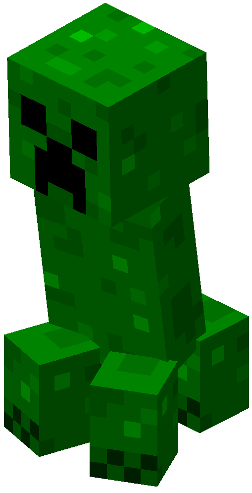
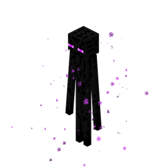
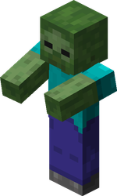

Створюй свій власний світ!
Minecraft - це місце, де твоя фантазія немає меж.
Будуй замки, досліджує пещери та перемагай дракона.
Почати пригодуКого можна зустріти?

Стів
Головний герой гри. Він може носити діамантову броню, будувати будинки та приручати вовків.

Кріпер
Небезпечний зелений моб. Якщо підійти близько - він вибухне! Тс-с-с...

Ендермен
Високий та загадковий. Вміє телепортуватися і красти блоки. Головне - не дивись йому в очі!
